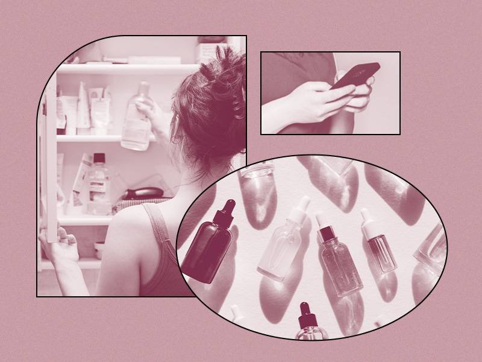

How Often Should You Change Your Skincare Routine?
21-8-2020

The constant stream of new skincare launches and products going viral on TikTok makes it tempting to switch up your skincare routine at a rapid-fire pace. When it comes to buzzy ingredients, innovative technology or simply a new, luxurious formula, it can be hard to say no to the latest, hottest thing. But is it really necessary — or beneficial to your skin — to be changing your skincare routine so frequently?
To help you figure it out, we consulted with Dr. Adriana Lombardi, a New Jersey-based, board-certified dermatologist and Skincare.com expert, to give us the lowdown on how often — if at all — you should switch up your skincare routine.
“Skincare products have the potential to work immediately, but to see the full potential results, I recommend giving the product at least four to six weeks,” says Dr. Lombardi. If you’re going to change up your skincare routine, she recommends doing so every season in order to give your products time to work.
Your skin’s needs may change with the seasons too. Many of us suffer from dry, flaky skin in the winter, even if our complexions are on the oily or combo side the rest of the year. If that’s the case, focus on incorporating more gentle, hydrating ingredients and richer moisturizers in your winter skincare routine. In the warmer months, you might find that a lightweight moisturizer offers all the hydration your skin needs.
“The three most important products in a skincare regimen are vitamin C, retinol and SPF,” says Dr. Lombardi. “These products are great for long-term use and are clinically proven to improve the appearance of aging skin.” Therefore, if you’re thinking about making a switch in your routine, we recommend trying products with these efficacious ingredients. If you’re new to retinol, we recommend the L’Oréal Paris Revitalift Pressed Night Cream with Retinol + Niacinamide. When it comes to SPF, it’s important to find a formula you enjoy applying (and reapplying) every day — we like the La Roche-Posay Anthelios Mineral SPF Moisturizer With Hyaluronic Acid. As for vitamin C, one of our favorites is the Vichy LiftActiv Vitamin C Serum.
“If you feel that a particular product is not suiting your skin type or if you notice your skin isn’t responding despite using a skincare regimen consistently, then you may want to consider switching it up,” adds Dr. Lombardi. Other signs that suggest you should discontinue a product or change your routine are breakouts, rashes, redness and any other irritations. “Look for products that are designed specifically to your skin type and consult with your dermatologist to see if you have specific skin conditions that require treatment by a pro so you can ensure you’re using the right products.”
If your skincare routine is delivering the results you want (and you’re applying SPF every day), then there’s really no need to change it. If you do want to try something new, most derms recommend incorporating one new product at a time, so you can immediately know the culprit of any new breakouts or irritation and stop using that particular product. Patch testing can also help you determine if a product is compatible with your skin type.